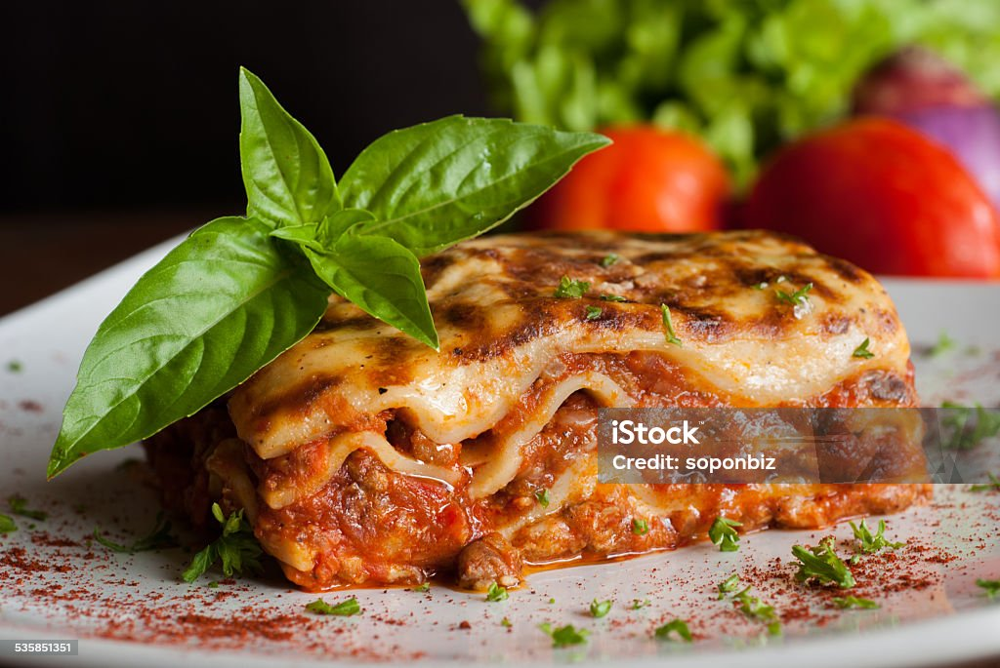

Lasagne Recipe for Indian Foodies

Description
From what I can tell, the secret behind Alton's lasagna is the addition of
a little sugar to the sauce and using a bit more cheese than most other
recipes. There are a few minor tweaks to his original recipe that I found
necessary, for example adding a dash of wine vinegar to the sauce and
changing the amount of Parmesan cheese.
Ingredients
- 2 teaspoons extra virgin olive oil
- 1 pound ground beef chuck
- 1/2 medium onion, diced (about 3/4 cup)
- 1/2 large bell pepper (green, red, or yellow), diced (about 3/4 cup)
- 2 cloves garlic, minced
- 1 (28-ounce)can good-quality tomato sauce
Steps
-
To freeze an unbaked lasagna: Line the pan with foil
before assembling, then assemble the lasagna as directly. Let cool
completely, and then freeze until solid. Once frozen, lift the frozen
lasagna block from the casserole dish, wrap it in more foil, then freeze
for up to a month.
-
To reheat an unbaked frozen lasagna: Remove the lasagna
from the freezer and unwrap all the layers of foil. Transfer to the
original casserole dish, cover, and let it thaw in the fridge overnight.
Once thawed, bake as directed.
-
To freeze baked lasagna: Line the pan with foil before
assembling, then assemble and bake as directed. Let it cool completely,
then freeze until solid. Once frozen, lift the frozen lasagna block from
the casserole dish, wrap it in more foil, then freeze for up to a month.
-
To reheat a baked lasagna: Remove the lasagna from the
freezer and unwrap all the layers of foil. Transfer to the original
casserole dish, cover, and let it thaw in the fridge overnight. Once
thawed, warm the whole casserole (covered with foil) in the oven at
350°F until bubbly again.